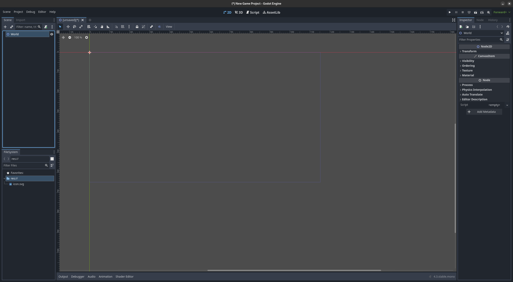

Godot 4 can be downloaded from the Godot website.
In order to use C# alongside Godot, the .NET version is required
Despite Godot is available on Steam, Epic Game Store and system package manager. But they do not have the C# version, so the official download is recommended.
You can use any IDE that support C#, including Visual Studio Code, but I personally prefer Rider. It is recommended to download Jetbrains Toolbox to manage all your Jetbrains IDE.
Student and teacher can obtain free licence to use Jetbrains IDE, but Rider is now free for non-commercial use.
If you haven't used Godot before, you'll see the screen below:
Press the + Create button on the toolbar to create a new project. A pop-up will appears as follow:
Set the desired project name and project path, then press Create & Edit.
Check out the offical documentation on the key concepts
First, create a 2D scene
Your screen should looks like this
Clicking on the Node2D will populate your Inspector menu
These are property of the node that can be changed in the editor. By clicking on the Node tab, the content will change to the following:
These are signal, they are used to do event-driven programming. Which will be used later.
We can rename the node by double clicking on the Node2D on the Scene list.

I've renamed it to World
Press Ctrl-s to save the scene.
We can add new node by clicking on the + button on the Scene tab
A collection of node is available here, for the player, we'll use the CharaterBody2D
A new node will pop up in the scene tree, and the editor nicely warned us about the lack of CollisionShape.
We can fix this warning by click on the CharaterBody2D and press the + button to add a new child node.
Add a new CollisionShape2D, and then, add a Sprite2D too while we're at it.
The scene tree should now looks as follow:
And another warning
This time, we have to create a shape for the CollisionShape2D node. But before fixing it, we should give the sprite a image.
We'll used the Godot icon for the player, and to use it as a sprite texture, we can drag the icon.svg in FileSystem tab
into the Texture property in the Inspector tab
Your screen should now looks like this. We can now give our player its collision shape. Click on the Collision2D node and go to the shape property in the Inspector tab
Select the RectangleShape2D
A blue collision box should now appear in the editor, resize it to fit the size of the icon.
Enable Grid Snapping to help with fitting the box onto the icon
Now, we can actually start programming. To attach a script onto the player click on the CharaterBody2D node, then, press the attach script button on the Scene tab
“Pasted image 20241108211856.png” could not be found.
A pop-up will now appears, change the language to C# as follow:
Godot have minimal C# support, so we'll do the C# programming on an external IDE, and in my case, Rider.
Your screen should looks similar to this, I've applied some plugin, for cosmetic purposes, so free free to play around with the setting.
But more importantly, we now need to open the solution where the Godot project is located.
Go back to Godot and look for thr FileSystem tab and right click
Choose Open in File Manager
You can now see where the Godot project is located in
After opening the project you will see the following screen
Select the CharaterBody2d.cs
This is the built in template code for a CharacterBody2D
using Godot;
using System;
public partial class CharacterBody2d : CharacterBody2D
{
public const float Speed = 300.0f;
public const float JumpVelocity = -400.0f;
public override void _PhysicsProcess(double delta)
{ Vector2 velocity = Velocity;
// Add the gravity.
if (!IsOnFloor())
{ velocity += GetGravity() * (float)delta;
}
// Handle Jump.
if (Input.IsActionJustPressed("ui_accept") && IsOnFloor())
{ velocity.Y = JumpVelocity;
}
// Get the input direction and handle the movement/deceleration.
// As good practice, you should replace UI actions with custom gameplay actions. Vector2 direction = Input.GetVector("ui_left", "ui_right", "ui_up", "ui_down");
if (direction != Vector2.Zero)
{ velocity.X = direction.X * Speed;
} else
{
velocity.X = Mathf.MoveToward(Velocity.X, 0, Speed);
}
Velocity = velocity;
MoveAndSlide();
}}
There are 2 type of process _PhysicsProcess and _Process:
_Process is called every frame
_PhysicsProcess is called every physics frame which is by default 60 frame per second
The rules of thumb would to do everything that involve collision or physics, to make sure physics is consistent even when frame rate differ in _PhysicsProcess
And thing that need to be done smoothly visually can be put in the _Process
There's a lot of conversation on the internet about their difference, so feel free to do more research!